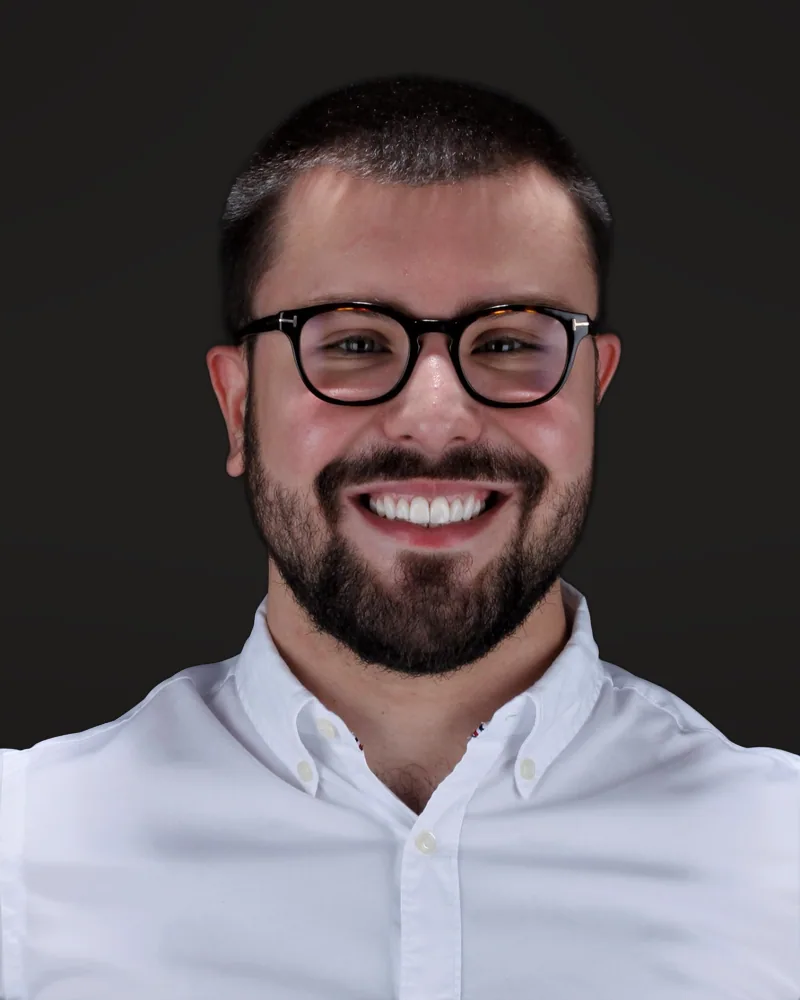

Dra. Pérola Cortez da Silva
Prótese Dentária, Reabilitação Oral e Estética
CRO-PR 21.181Especialista em Prótese Dentária, com atuação em Reabilitação Oral e Odontologia Estética. Une técnica apurada, experiência e planejamento criterioso para devolver função, conforto e harmonia ao sorriso, com tratamentos seguros e resultados individualizados. Atendimento humanizado, com empatia e respeito aos pacientes.

Dra. Thaísa Gonçalves
Periodontia e Implantodontia
CRO-PR 25.104Atua em Periodontia e Implantodontia, com foco em saúde gengival, abordando função e estética de maneira individualizada.

Dra. Yasmim Elias S. Reche
Cirurgia Oral Menor e Implantodontia
CRO-PR 25.132Atua em Cirurgia Oral Menor e Implantodontia. “Minha missão é desmistificar os medos ligados à cirurgia odontológica e proporcionar um atendimento humanizado, priorizando o bem-estar de cada paciente.”

Dra. Marcela de Oliveira Ferreira
Endodontia
CRO-PR 30.667Especializada em Endodontia, busca proporcionar um tratamento humano e empático. Endodontia mecanizada com segurança e previsibilidade.

Dra. Fernanda Omoto Tanita
Odontologia Estética e Restauradora
CRO-PR 15.999Atua em Odontologia Estética e Restauradora com responsabilidade, ética e profissionalismo. O atendimento parte de uma abordagem humanizada, que prioriza o acolhimento, a escuta atenta às necessidades de cada pessoa e o bem-estar integral do paciente.

Dra. Leidielly Valente
Odontopediatria e Pacientes com Necessidades Especiais
CRO-PR 24.429Especialista em Odontopediatria e Pacientes com Necessidades Especiais, com atuação em Sedação Inalatória Consciente. Une técnica, planejamento e acolhimento para um atendimento seguro, leve e individualizado, respeitando o tempo, a fase de desenvolvimento e as necessidades de cada criança. Busca construir vínculos, despertar confiança e criar experiências positivas com a Odontologia desde a infância.

Dr. Luiz Felipe Vitorino
Harmonização Orofacial
CRO-PR 29.388Atua em Harmonização Orofacial, com procedimentos minimamente invasivos que buscam o equilíbrio entre sorriso e face. Cada indicação começa por uma análise facial individual, respeitando os traços de cada paciente.